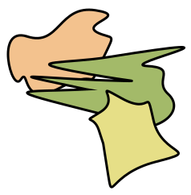

SVG som embedded img
Vi kan placere en SVG i domumentet som en almindelige billedfil med <img> tagget. Fordelen er, at det er nemt og hurtigt, men vi mister muligheden for at manipulere SVG'en kode direkte med CSS.
Vi kan placere en SVG i domumentet som en almindelige billedfil med <img> tagget. Fordelen er, at det er nemt og hurtigt, men vi mister muligheden for at manipulere SVG'en kode direkte med CSS.
Her er SVG koden kopieret direkte ind i dokumentet. Fordelen ved denne metode er, at vi kan style og manipulere SVG'en direkte med CSS og JavaScript. Ulempen er, at det kan gøre HTML-filen større og mere kompleks.
Her er SVG koden med hotspots inkluderet. Fordelen ved denne metode er, at vi kan style og manipulere hotspots direkte med CSS og JavaScript. Ulempen er, at det kan gøre HTML-filen større og mere kompleks.
Tryk på knapperne for at vise/skjule hotspots i SVG'en. Fordelen ved denne metode er, at vi kan bruge JavaScript til at kontrollere synligheden af hotspots uden at ændre selve SVG-koden og skærmlæsere bedre kan forstå indholdet.